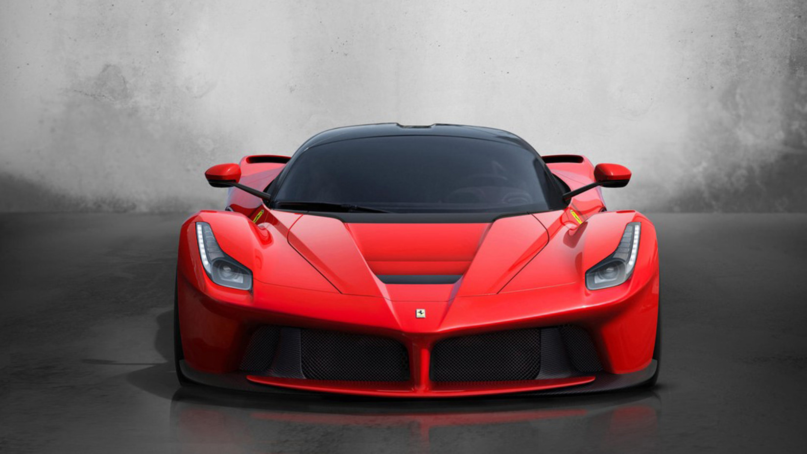

Though we love the oldies, we have to smile at the direction in which Ferrari is headed. In a world where we want to focus more on sustainability - Ferrari is promoting a new generation of cars with a focus on hybrid and electric technology utilised in F1. Below you will see an image of Ferrari's LaFerrari: the first hybrid car ever produced by Ferrari.
